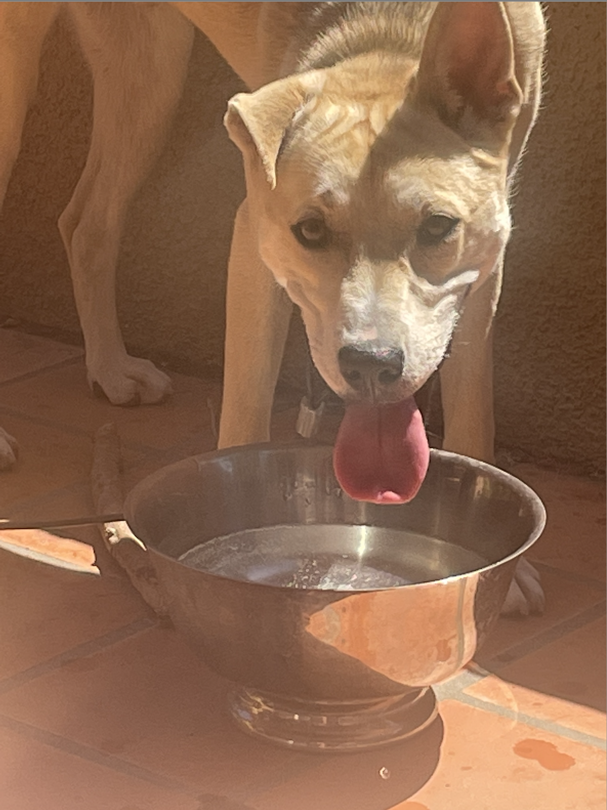
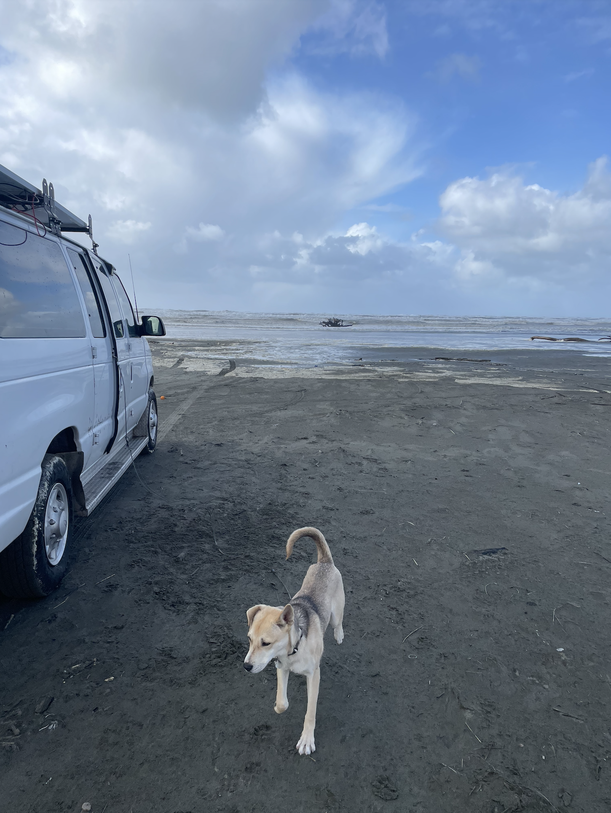
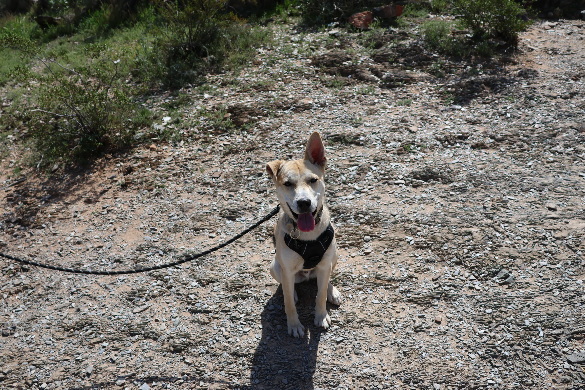
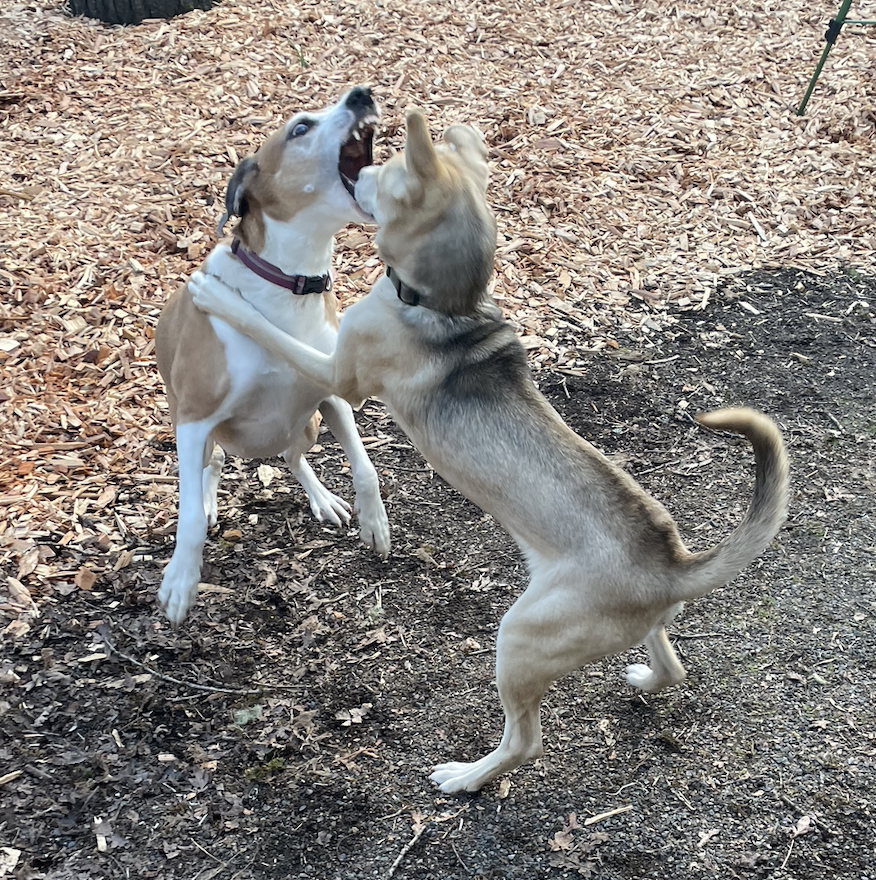
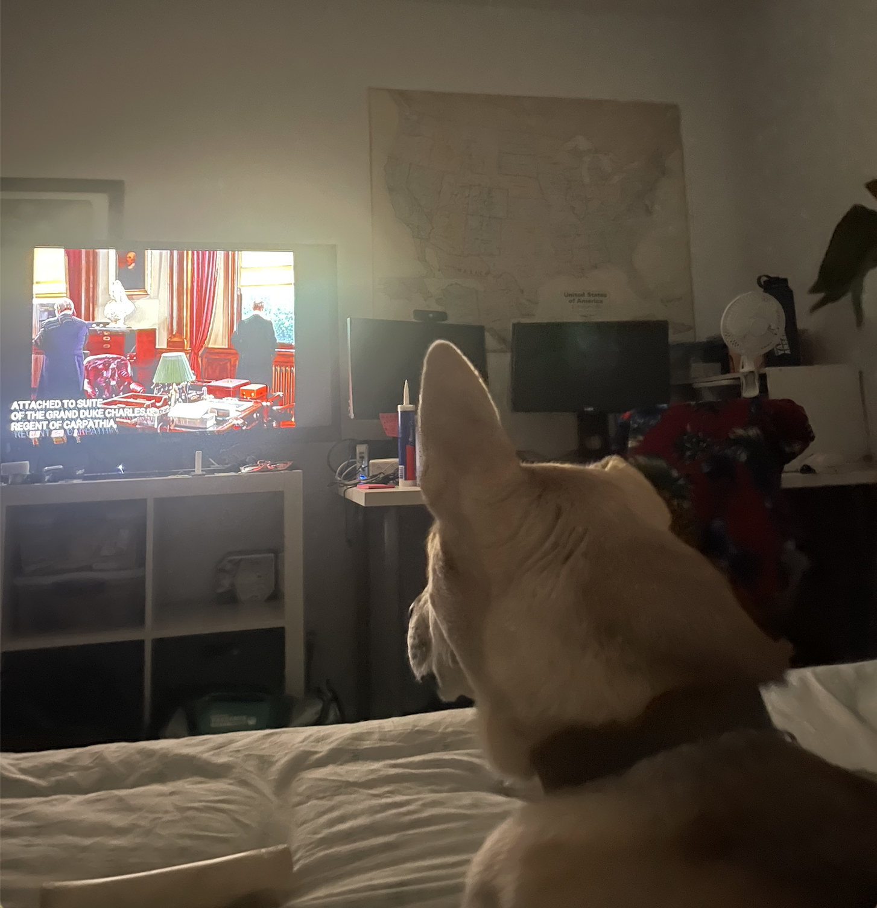
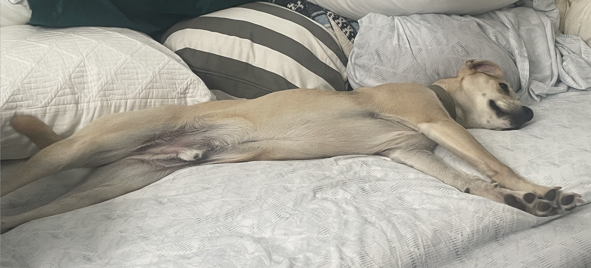
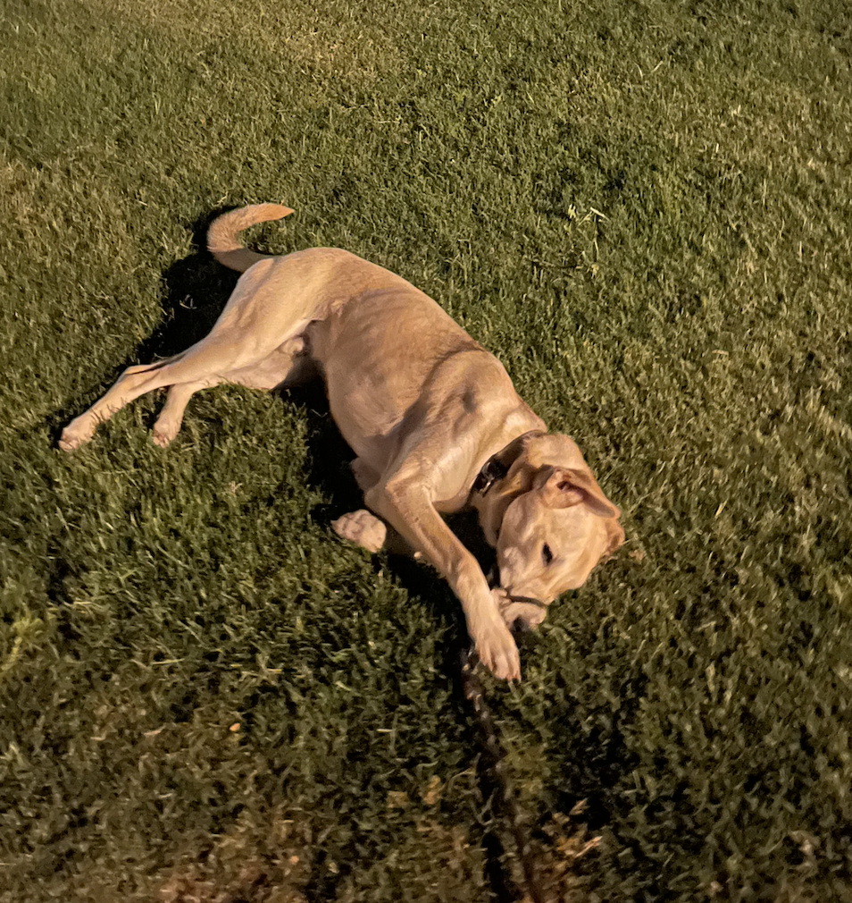
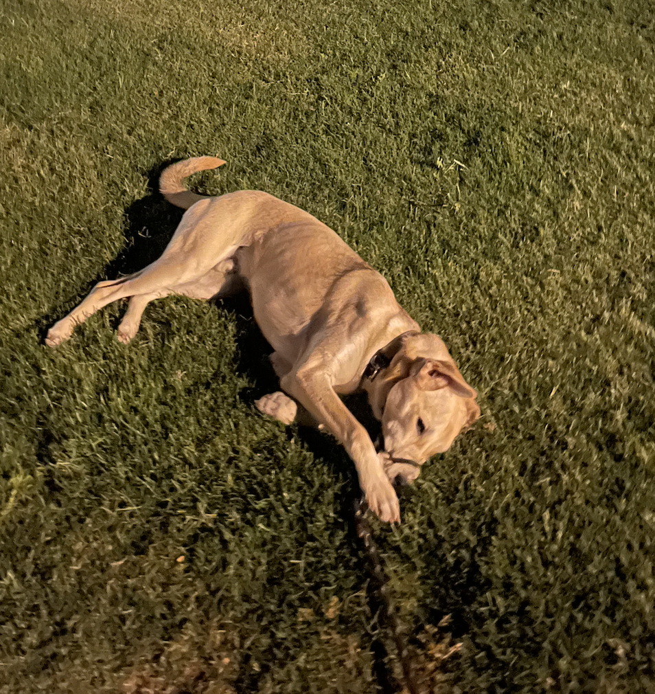

Hello again!
BOO! Did I scare you?
I heard that you love my dog so much that you came back to learn more about his interests.
Well, today is your lucky day! I have more information for you.
He really loves being outdoors.

He likes the beach.
He likes the desert.
But he has more fun in the snow.


He can be very sensitive too.
He likes watching movies with his mom (me).
He is a very hard worker.

And when he is not busy, he naps a lot.
Tug of war is his other favorite pastime.


BUT most of all... he loves laying in thick grass.

 
